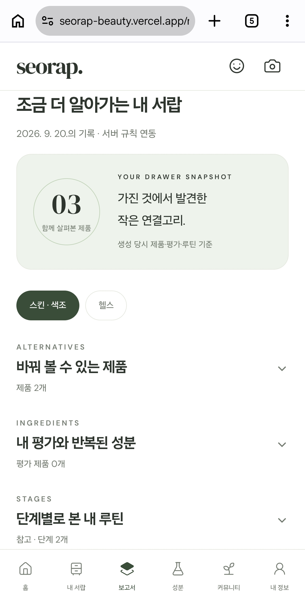
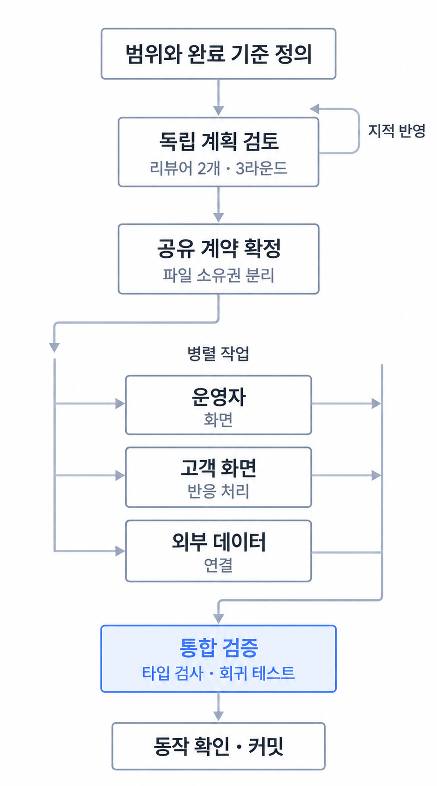

최우수상 2위
제1회 KODATA × BDAI AI·데이터 금융 아이디어 공모전
팀 ‘代잇다’ · 후계자 부재에 따른 중소기업 승계 위험 지수 K-SRI 제안

Portfolio · Product Engineer · Backend · Data
사용자 문제를 정의하고 서비스 · 데이터를 설계하는 Product Engineer
뷰티 제품 관리 서비스를 기획하고 백엔드를 구현했습니다. 에너지 데이터 수집·검증 파이프라인을 설계·구현했습니다.
2024.07~
2026.06 수료
2027.02 졸업 예정
팀 ‘代잇다’ · 후계자 부재에 따른 중소기업 승계 위험 지수 K-SRI 제안
크래프톤 × CJ올리브영 공동 주최
웰니스 기획전 제작 자동화 MVP 설계·구현


보유 제품의 역할·성분·사용 평가를 모아 제품 비교와 루틴 관리를 지원합니다.
담당서비스 기획 · 백엔드 · 데이터 처리 · 모델
화장품 패키지의 한국어 인식 모델을 학습하고, 같은 검출기·입력 조건에서 성분명 복원 성능을 비교했습니다.
동일한 스튜디오 사진 200장 중 전성분 정답이 있는 105장 평균 · 학습·평가 제품 분리상세 사례 ↗
계량 이벤트를 수집·검증·집계해 예측 모델과 대시보드에 제공합니다.
담당DB 설계 · 데이터 파이프라인 · 운영 관측
원본 이벤트·처리 정책·집계 결과를 분리하고, 승인된 관측값을 별도 스키마에 저장했습니다.
과거 데이터 재생 기반 · DB 설계·수집 파이프라인 담당상세 사례 ↗
상품 큐레이션과 문구 생성부터 운영자 검토·발행까지 연결한 MVP입니다.
담당요구사항 정의 · AI 작업 분담 · 통합 검증
AI 에이전트의 병렬 작업과 독립 검토, 단계별 검증·커밋으로 구현을 진행했습니다.
상품 큐레이션·문구 생성·운영자 검토·발행상세 사례 ↗